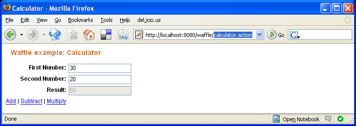

This example demonstrates how you can resolve a users request directly to a method on any POJO. In Waffle terminology we call this an ActionMethod.
As you can see the Controller is an extremely simple object. The three methods add, subtract, and multiply are themselves ActionMethods. Notice that they each have 2 arguments. Additionally each method has a unique type for its arguments (int, long, float). Waffle will automatically convert the users request into the correct type. This conversion is NOT limited to primitives, custom conversion is easily supported but out of scope for this example (see Binding\Validation section for further details).
public class CalculatorController {
public Number result;
public Number getResult() {
return result;
}
public void add(int firstNumber, int secondNumber) {
result = firstNumber + secondNumber;
}
public void subtract(long firstNumber, long secondNumber) {
result = firstNumber - secondNumber;
}
public void multiply(float firstNumber, Float secondNumber) {
result = firstNumber * secondNumber;
}
}Registration is as you would expect. In this example the Action must be registered to the session level so that users are not sharing the same result property.
public class MyRegistrar extends AbstractRegistrar {
public MyRegistrar(Registrar delegate) {
super(delegate);
}
public void session() {
register("calculator", CalculatorController.class);
}
}The jspx code below is not very exciting however notice lines 43 - 45. These 3 lines demonstrate different ways to invoke an ActionMethod. Line 43 add|firstNumber|secondNumber pragmatically defines how the method arguments should be resolved. See the action-methods.html}ActionMethod documentation for complete details.
<?xml version="1.0" encoding="UTF-8"?>
<html xmlns="http://www.w3.org/1999/xhtml"
xmlns:jsp="http://java.sun.com/JSP/Page"
xmlns:c="http://java.sun.com/jsp/jstl/core">
<jsp:output doctype-root-element="html"
doctype-public="-//W3C//DTD XHTML 1.0 Transitional//EN"
doctype-system="http://www.w3c.org/TR/xhtml1/DTD/xhtml1-transitional.dtd"/>
<jsp:directive.page contentType="text/html;charset=UTF-8"/>
<head>
<title>Calculator</title>
<style type="text/css" title="currentStyle" media="screen">
@import "stylesheets/style.css";
</style>
<script src="scripts/myscript.js" type="text/javascript">
// keep this space
</script>
</head>
<body>
<form action="calculator.action" method="post">
<h3>Waffle example: Calculator</h3>
<div class="fieldRow">
<label for="firstNumber">First Number:</label>
<input type="text" name="firstNumber" id="firstNumber" autocomplete="off"/>
<br style="clear:both"/>
</div>
<div class="fieldRow">
<label for="secondNumber">Second Number:</label>
<input type="text" name="secondNumber" id="secondNumber" autocomplete="off"/>
<br style="clear:both"/>
</div>
<div class="fieldRow">
<label for="result">Result:</label>
<input type="text" name="result" id="result" value="${controller.result}" disabled="disabled" readonly="readonly"/>
<br style="clear:both"/>
</div>
<a href="javascript:fireMethod('add|{firstNumber}|{secondNumber}');">Add</a> |
<a href="javascript:fireMethod('subtract');">Subtract</a> |
<a href="javascript:fireMethod('multiply');">Multiply</a>
</form>
</body>
</html>Lines 44 and 45 in the example above do not pragmatically define how their argument values are to be resolved. So in order to handle this we can add an annotation to each of those methods in the Action. Below we have updated the CalculatorController with two ActionMethod annotations (lines 12 and 17).
public class CalculatorController {
public Number result;
public Number getResult() {
return result;
}
public void add(int firstNumber, int secondNumber) {
result = firstNumber + secondNumber;
}
@ActionMethod(parameters = {"firstNumber", "secondNumber"})
public void subtract(long firstNumber, long secondNumber) {
result = firstNumber - secondNumber;
}
@ActionMethod(parameters = {"firstNumber", "secondNumber"})
public void multiply(float firstNumber, Float secondNumber) {
result = firstNumber * secondNumber;
}
}